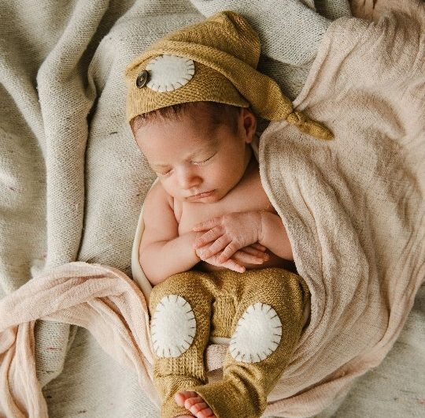
Recién nacidos
Sesión newborn con mantas y tejidos suaves, para guardar cómo eran sus primeros días.
Reservá esta sesión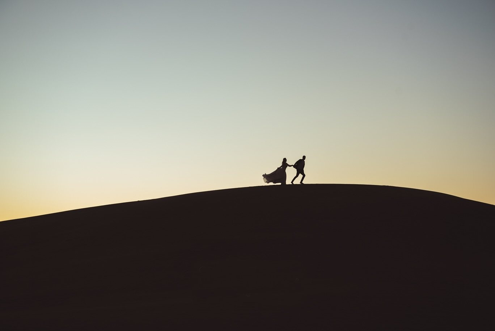
Fotógrafa newborn y de familia, bodas y 15 años en Bahía Blanca.
Desde los primeros días de tu bebé hasta el día de tu boda. Elegí tu sesión y reservá el turno.

Sesión newborn con mantas y tejidos suaves, para guardar cómo eran sus primeros días.
Reservá esta sesión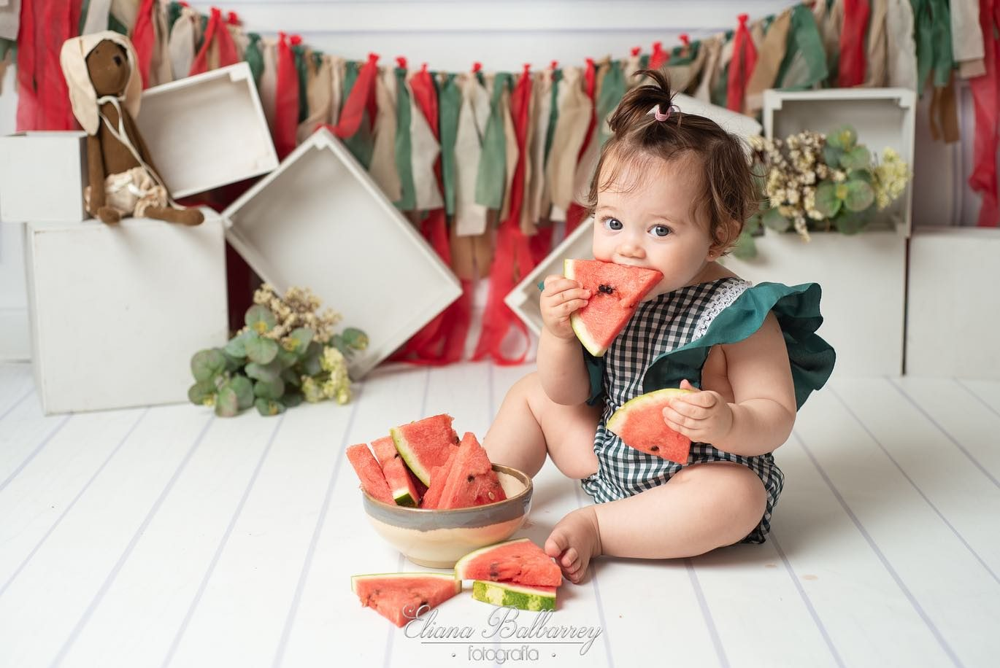
Smash de frutas para festejar el primer año: que lo disfrute y explore a su manera.
Reservá esta sesión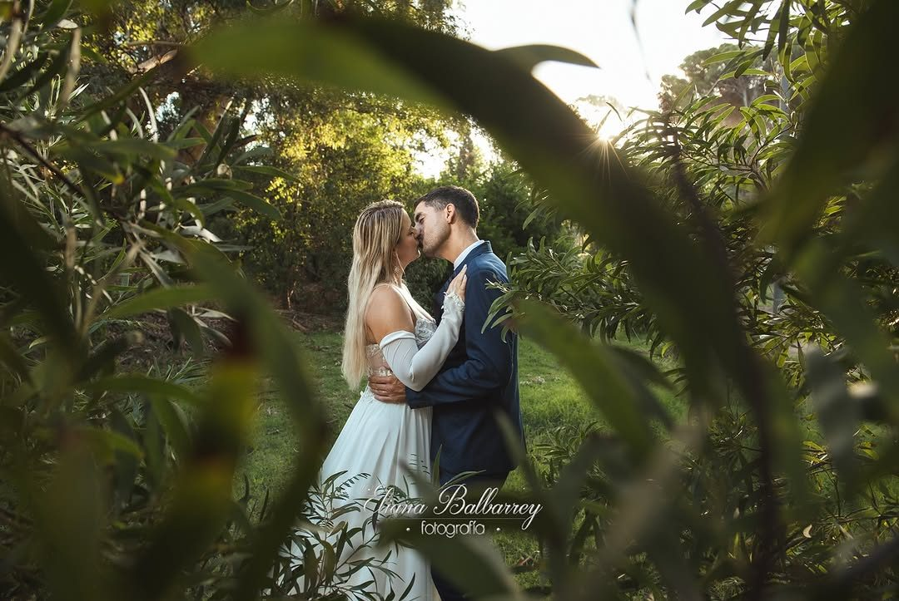
La fiesta con toda su energía y una sesión post boda, en los médanos o donde los represente.
Reservá esta sesión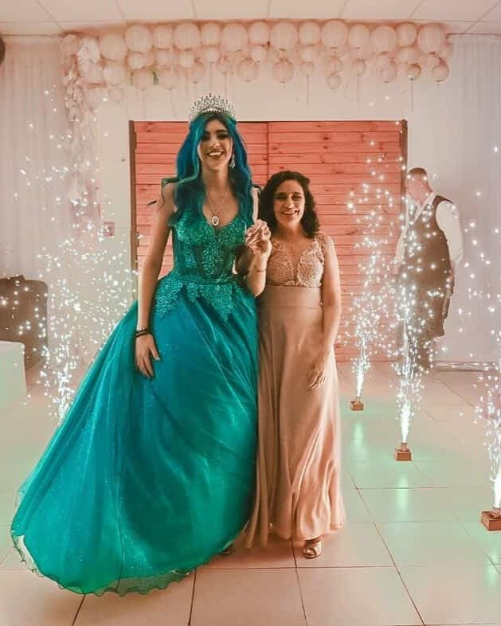
La entrada, el vestido, las bengalas y el baile con su familia.
Reservá esta sesión“Una sesión que definitivamente amo hacer y que pocos se animan.”
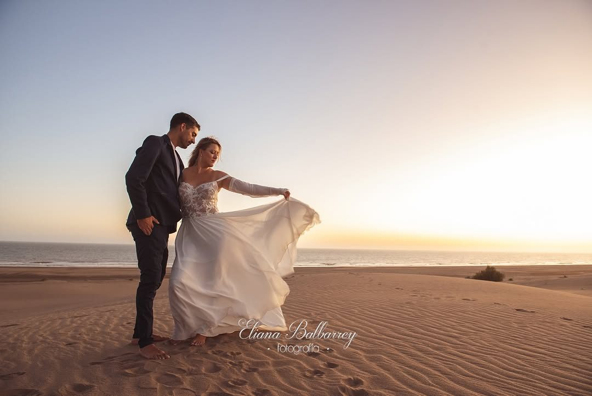
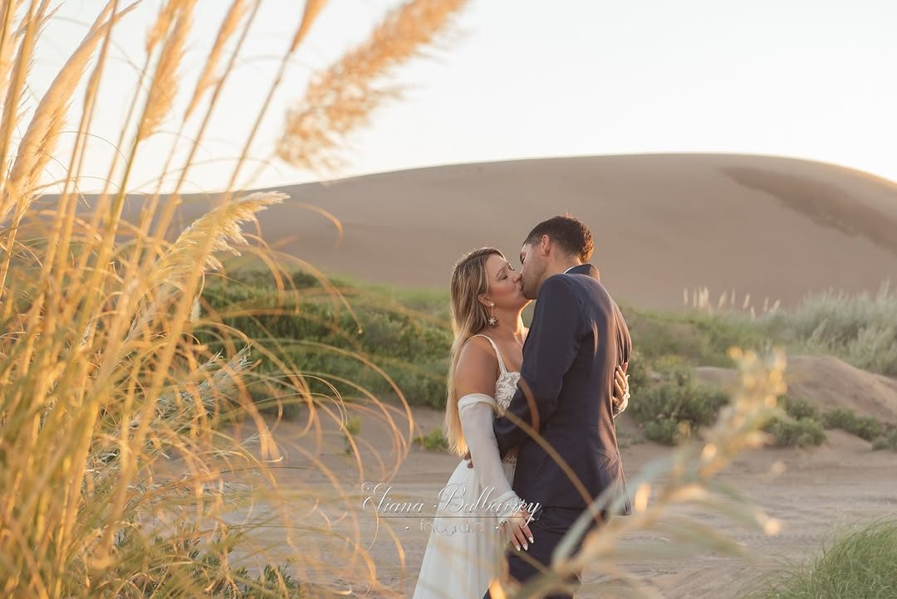
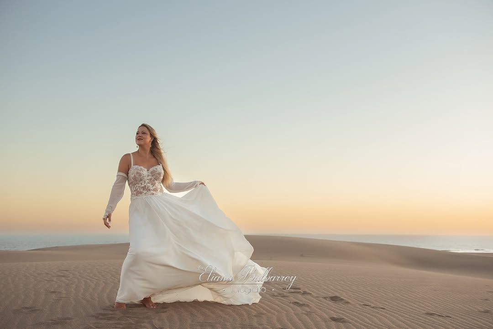
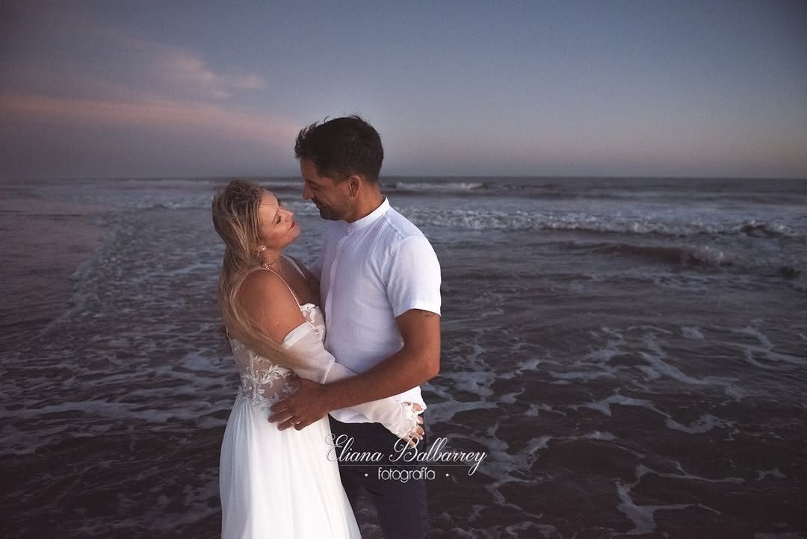
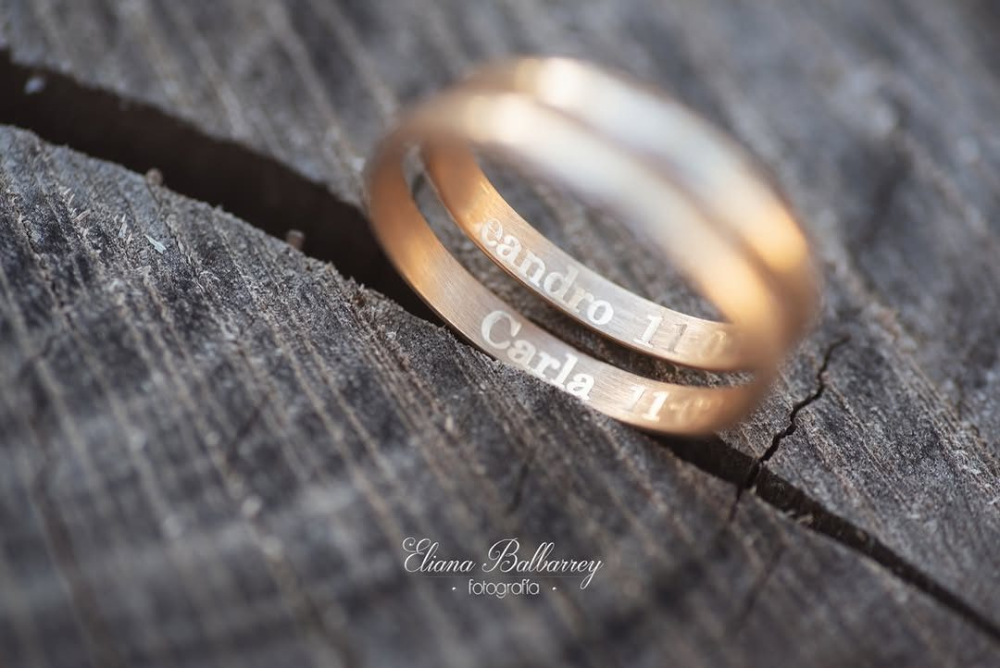
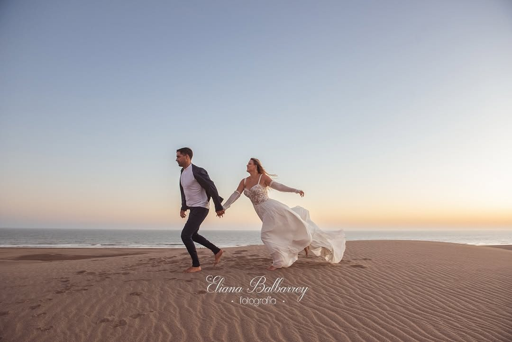
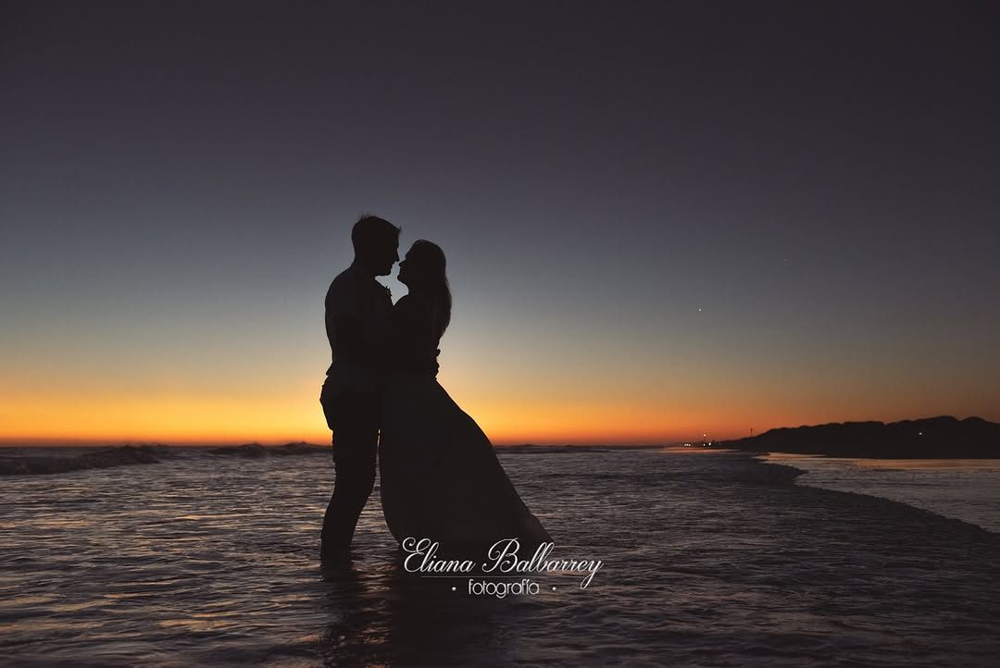
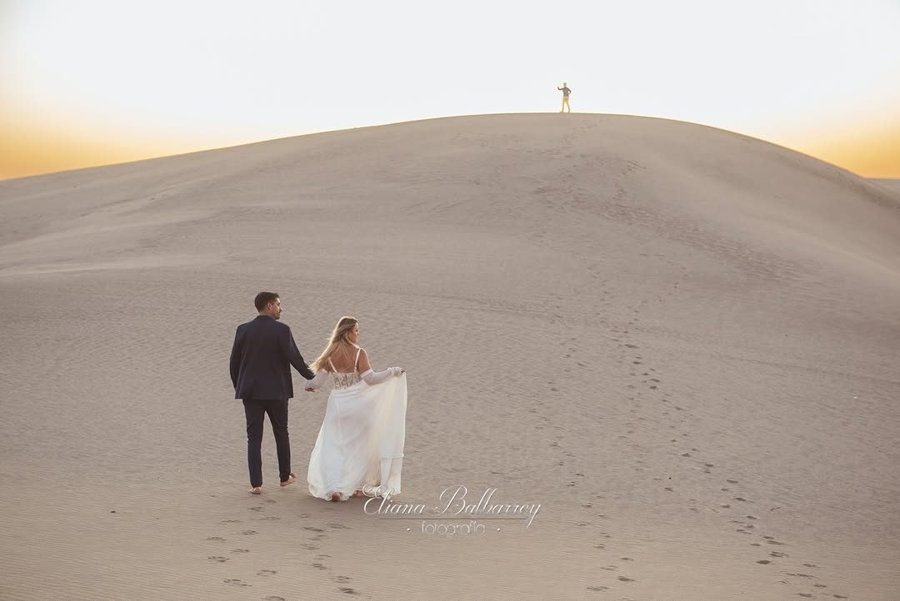
¿Te animás a hacerte unas fotos como estas?
Reservá tu sesión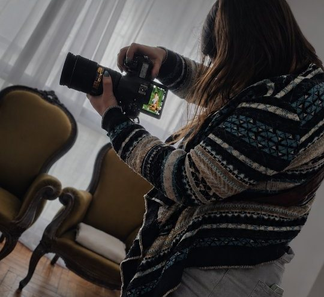
Soy fotógrafa en Bahía Blanca. Hago sesiones de recién nacidos y familia, y fotografío bodas y 15 años.
También creé Luma, un estudio fotográfico de estilo minimalista y cálido, preparado para sesiones y contenido audiovisual.
Las sesiones son con turno. Contame qué sesión querés y qué día te queda bien, y coordinamos el horario.